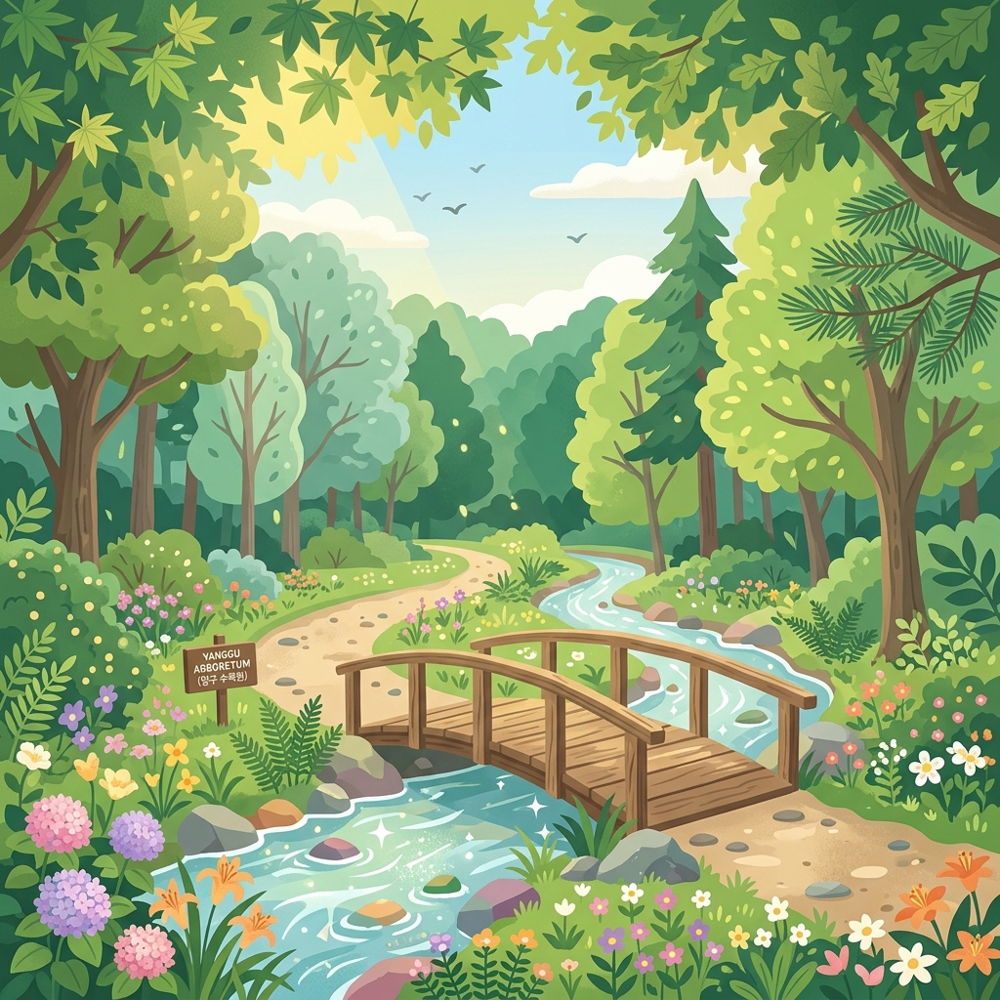
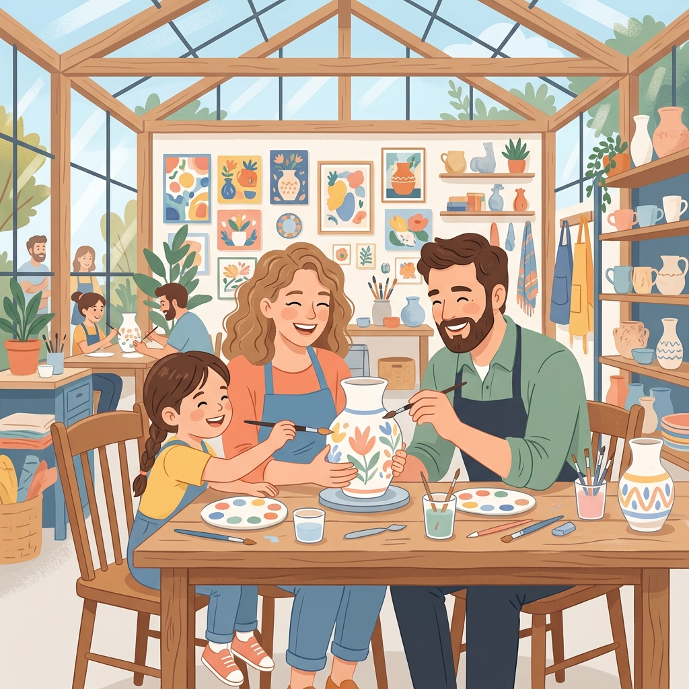

안전 최우선
의료기관 및 대처법
최소 동선
유모차 무장애 길
완전한 휴식
정원 피크닉
오늘의 양구 날씨
24°C 맑음 (여행 추천!)
🧭 테마별 빠른 찾기
우리가족 여행 짐싸기 현황
준비물들을 체크해 보세요!
0%
베스트 자연 휴양지
전체보기
자연
파로호 한반도섬
평탄한 나무 데크길 (유모차 최적)

자연
DMZ 양구수목원
야생화 정원과 숲속 모험 놀이터

체험/역사
양구 백자박물관
가족 도자기 빚기 일일 도예교실